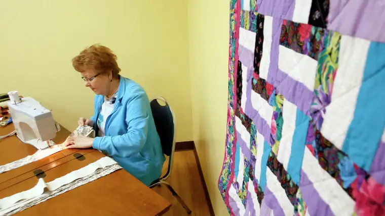

FARGO — In a windowless, basement room of Sts. Anne and Joachim Church, they gather weekly, religiously, with their spools, fabric and scissors.
As the quilters fire up their sewing machines, needles bob and prayers flow.
“We like to quilt, we like to sew and we love the fact that (the quilts) are being given away to people from our parish or in nursing homes,” says parish quilter Betty Fraase.
This quilting ministry is just one of many threads connected to the outreach of parish nursing, known also as faith-community nursing. But the mission is singular: to bring health to the community and the love of Christ to the ailing.
Andi Olsonawksi received a quilt following her cancer diagnosis a few years ago. “I’m a blanket person, so I love covering up,” she says, “and my kids cover up with it, too. We all snuggle up with it. It’s something that will be with us for years.”
Just as meaningful to her, though, was the love that came knocking on her door during that difficult time, in the form of parish nurse Allison Wolf, who brought the quilt.
“She’s one of those true souls,” Olsonawski says. “She’s an impactful woman with faith in her heart. You can just tell. I love that about her.”
Lois Ustanko, faith-community nursing director at Sanford Health, says the relationships are what make the ministry so effective. “The gift of it is you have someone who can journey alongside you for many years, across the whole continuum of your life, from cradle to grave,” she says.
Jeanette Pyle irons material for quilt making at Sts. Anne & Joachim Catholic Church in south Fargo. David Samson / The Forum
Jeanette Pyle irons material for quilt making at Sts. Anne & Joachim Catholic Church in south Fargo. David Samson / The Forum
The mission hearkens back to earlier times when the church was the main provider of healthcare. “Before hospitals existed, people went to where the nuns and monks were, if there was no family to care for them. It’s really a return back to the church’s role in caring for people,” she says.
Around 150 faith-community, or parish, nurses, currently work in the Fargo region, she says. Concordia College has educated about 1,700 in the past 20 years, and Sanford now offers online training.
Jean Bokinskie, director of the parish nurse ministry at Concordia, calls parish nursing a revival of the human touch.
“In such a technological world, we can get all the information we want on our fingertips, cell phones, or Google,” she says. “But the piece we still all really desire most is the physical presence.”
A parish nurse companions with others, Bokinskie says, both in the “great joy times,” like marriage and baptism, and the painful ones, like a difficult diagnosis or loved one’s death. “But that’s where Christ wants us to be — that’s where we need to be.”
The ministry also provides a way for nurses to meld their spiritual convictions with their work.
Kris Hintz, parish nurse coordinator at Sts. Anne and Joachim, says this “unique and peaceful” approach to nursing enticed her to the ministry in 2009.
“People don’t often look at the spiritual side of healing,” she says. “It’s such a privilege to go into people’s homes and pray with them, sometimes just listen … it’s humbling, and really about God’s love and him being the ultimate healer.”
The “look” of parish nursing varies, depending on the church community and its needs. Some focus on blood pressure checks and education. Others, on outreach. And while some volunteer their time, others are paid.
Brenda Bauer, parish nurse and deaconess at Olivet Lutheran Church, carries out her work “to the truest sense of what is envisioned in this role,” according to her colleague Allison Wolf.
JoAnn Butler cuts material for quilt making. David Samson / The Forum
JoAnn Butler cuts material for quilt making. David Samson / The Forum
“I’ve been a parish nurse before it was called that,” she says, noting her 30 years in the ministry. “The thought in the earliest years was that, as hospitals became more like corporations, churches needed to take back that healing sense of ministry.”
“We’re not so much ‘hands on’ as ‘hearts on,'” Bauer adds, differentiating with regular nursing. “We’re both a health counselor — listening to what people are needing — and sometimes being an advocate for them.”
One of her most challenging but rewarding roles, she says, was spiritually assisting the Carlsen family during the process of surgical separation of their conjoined daughters, Abigail and Isabelle, in May 2006.
“I walked with them through that journey, the separation,” she says. “It was the most intense thing I’ve ever had to do, being with the family the day of the surgery … I may have been more nervous than they were.”
Despite the anxiety-producing moments, she says, “every step we ended up rejoicing.”
Though the work can be emotionally demanding at times, given its focus on caregiving, Bauer says, “Jesus washing the feet is an important symbol for the deacon part of me,” and it tends to return tenfold. “Often, in serving others, we find ourselves being served; it’s cyclical.”
[For the sake of having a repository for my newspaper columns and articles, I reprint them here, with permission, a week after their run date. The preceding ran in The Forum newspaper on Feb. 24, 2018.]